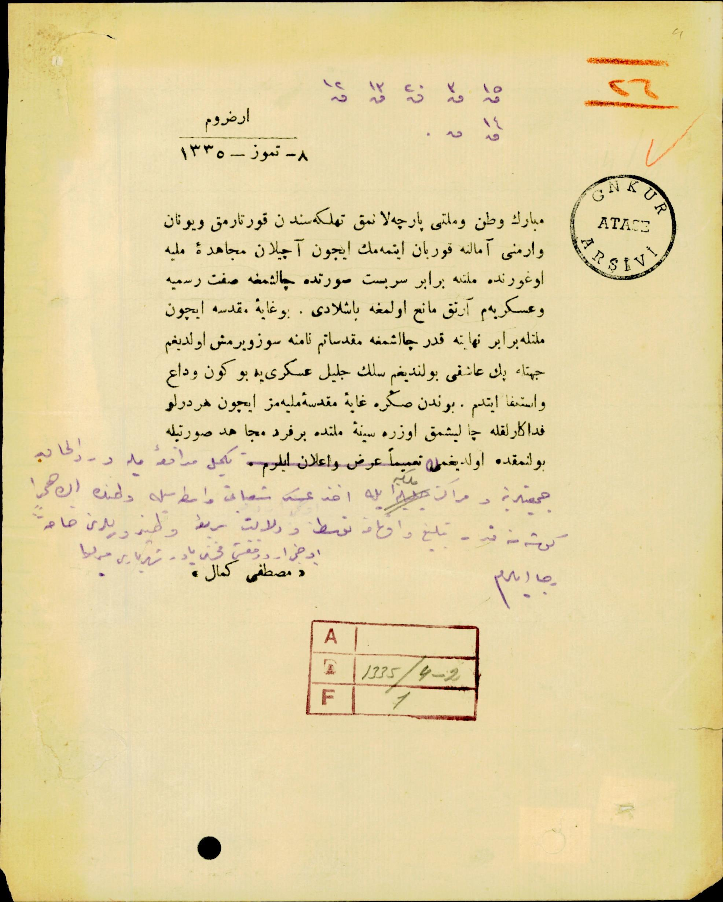

Mübarek vatan ve milleti parçalanmak tehlikesinden kurtarmak ve Yunan ve Ermeni emeline kurban etmemek için açılan mücahideyi milliye uğrunda millete birebir serbest surette çalışmaya sıfatı resmiye ve askeriyem artık mani olmaya başladı. Bu gayeyi mukaddese için milletle birebir nihayet kader çalışmaya mukaddesatım namına söz vermiş olduğum cihette pek aşığı bulunduğum silk celileyi askeriyeye bugün vedayı istifa ettim. Bundan sonra gayeyi mukaddeseyi milliyemiz için her türlü fedakarlıkla çalışmak üzere sineyi millette bir ferdi mücahit suretiyle bulunmakta olduğumu tamimen arz ve ilan eylerim.